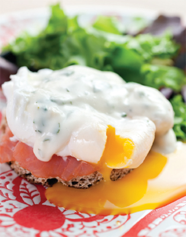
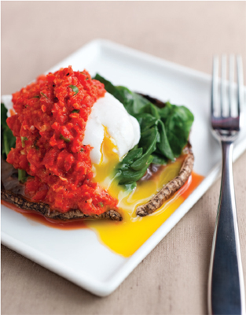

The Better for You Breakfast Sandwich
A few savvy choices give you all the flavor and satisfaction of that greasy bacon, egg, and cheese sandwich with just a fraction of the fat and almost none of the guilt. Save even more calories by skipping half the bread.
SERVES 4
Calories per serving: 306
2 tablespoons white vinegar
4 whole wheat English muffins
4 slices of low-fat cheese
4 deli-thin slices low-sodium ham
4 large eggs
4 slices tomato
Spritz of olive oil
½ tablespoon dried oregano
Salt, to taste
Pepper, to taste
1. PREHEAT the oven to 350 degrees. Fill a large, deep skillet of water to a depth of 4 inches. Add vinegar and bring to a steady simmer.
2. ARRANGE the muffin halves on a baking sheet and using a round biscuit cutter, cut each slice into a round. Cut the cheese slices into 3-inch rounds using a round biscuit cutter. Place a slice of cheese on each of the bottom halves. Cut the slice of ham into shreds or ribbons and place on top of the cheese. Transfer to the oven and bake until cheese melts and top halves are toasted, about 4 minutes.
3. MEANWHILE, cut 4 slices from the tomato and spritz each slice with some olive oil. In a separate nonstick sauté pan over medium-high heat, sauté the tomato slices for 1 minute on each side. Then season with salt, pepper, and dried oregano. Set aside.
4. BREAK one egg into a small bowl. Hold the edge of the bowl close to the simmering water and gently tilt the bowl to pour the egg into the water. Repeat with the remaining three eggs. Cook until whites are solid and the yolk is still runny, about 3 minutes. Carefully remove the eggs one at a time with a slotted spoon. Transfer to a plate with paper towels to drain.
5. REMOVE the toasted muffin halves with cheese and ham from the oven and transfer to a plate. Place a slice of sautéed tomato on top of the ribbons of ham and top with a poached egg. Season with salt and pepper and top with the other half of each muffin. Serve immediately.

Eggs Benedict on a Muffin with Garlic Aïoli
This brunch staple gets a slimming makeover when we replace that fatty Canadian bacon with a few slices of smoked salmon. Garlic and a little lemon transform low-fat mayo into an aioli worth getting out of bed for.
SERVES 4
Calories per serving, eggs Benedict on a muffin: 178
Calories per serving, garlic aïoli: 145
For the eggs:
8 fresh chives
Salt, to taste
Pepper, to taste
2 tablespoons white vinegar
4 large eggs
2 whole wheat English muffins
8 slices smoked salmon (4 ounces)
1 cup mixed baby greens
For the garlic aïoli:
1 ½ cups reduced fat mayonnaise
2 cloves garlic, coarsely chopped
2 tablespoons fresh lemon juice
1 teaspoon finely chopped
lemon zest
Salt, to taste
Freshly ground pepper, to taste
2 tablespoons water, warm
2 tablespoons finely chopped, fresh, flat-leaf parsley
1. TRIM 1 ½ inches from the tops of the chives, and reserve for garnish. Finely chop remaining chives, and transfer to a small bowl. Set aside.
2. FILL a large, deep skillet of water to a depth of 4 inches. Add vinegar and bring to a steady simmer. Break an egg into a small bowl, hold the edge of the bowl close to the water, and tilt the egg into the water. Repeat with the remaining eggs. Cook until whites are cooked through, but yolk is still runny, about 3 minutes. Carefully remove the eggs, one at a time, with a slotted spoon, and drain on paper towels.
3. TOAST the English muffin halves, and cut into 3-inch rounds using a biscuit or cookie cutter. Place a poached egg on the cut side of each muffin, and drape a slice of smoked salmon on each egg. Divide the greens among the muffins and mound over the smoked salmon. Spoon the sauce over and around the eggs Benedict, garnish with remaining chives, and serve.
Tip
Low-fat buttermilk has a creamy texture and richness from the acidity that can substitute for higher-fat dairy products such as cream and sour cream.
Sweet ’N’ Spicy Breakfast Hash with Tofu
We jettisoned the belly-busting corned beef and went with tasty baked tofu, hooking it up with some nice spice notes when it mingles with jalepeño, red onion, and a little hot sauce. Drop a poached egg on top and it’s breakfast done right.
SERVES 4
Calories per serving: 322
For the hash:
1 tablespoon vegetable oil
1 cup finely chopped red onion
1 large jalepeño, chopped
Kosher salt, to taste
Freshly ground pepper
4 cups peeled, roasted sweet potatoes, 1-inch cubed
2 tablespoons ketchup
4 tablespoons Worcestershire sauce
8 ounces baked tofu, diced
4 teaspoons chopped parsley
For serving:
scallions, chopped
Hot sauce
Ketchup
1. IN A NONSTICK SKILLET, heat the oil over medium-high heat. Add the onions and the jalepeño and season with salt and pepper. Cook until golden, about 5 minutes.
2. ADD the cubed potatoes, ketchup, and Worcestershire sauce and season with salt. Press the mixture down into the skillet, reduce the heat to medium, and cook until golden, about five to seven minutes.
3. WHILE THE POTATOES ARE COOKING, cut the tofu into quarter-inch dice, about the same size as the potatoes. When potatoes are cooked, gently add diced tofu.
4. PLACE the hash on a plate and top with parsley. Serve with scallions, hot sauce, and ketchup, if desired.
Here’s a breakfast question for you: What’s not to like about low-cal, low-fat baked wheat bread French toast topped with creamy ricotta, dark berries, and rich maple syrup? So it’s a loaded question, but to us it’s the best reason to rise and shine we’ve heard in a long time. It’s a sundae to start your Sunday!
SERVES 2
Calories per serving: 353
1 whole egg
1 egg white
2 tablespoons skim milk
½ teaspoon ground cinnamon
1 teaspoon honey
4 slices whole wheat bread, crusts removed
½ cup part-skim ricotta cheese
½ cup raspberries
½ cup blackberries
2 tablespoons pure maple syrup
1. PREHEAT the oven to 375 degrees.
2. IN A BOWL, whisk together the egg, egg white, milk, cinnamon, and honey. Spray a nonstick muffin pan with calorie-free vegetable spray. Carefully dip each slice of the bread into the egg/milk mixture and press it into the muffin pan. Bake at 375 degrees for 12 minutes until crisp.
3. MEANWHILE, in a small bowl, mix together the ricotta cheese until smooth. Spoon equal amounts of the ricotta mixture into each of the bread cups and top with berries. Drizzle the maple syrup on top.
Portobello Mushroom Benedict with Roasted Red Pepper Sauce
You’ll never go back to muffins again after you experience eggs Benedict with the elegant addition of portobellos. And roasted red pepper sauce only tastes decadent as a full-flavor, low-fat stand-in for the usual scale-tipping hollandaise.
SERVES 4
Calories per serving, portobello Benedict: 183
Calories per serving, roasted red pepper sauce: 70
For the portobello Benedict:
4 portobello mushrooms, gills removed
1 tablespoon olive oil
1 garlic clove
2 10-ounce bags of baby spinach
1 teaspoon fresh lemon juice
1 teaspoon lemon zest
Pinch nutmeg
½ teaspoon salt
1/4 teaspoon freshly ground pepper
4 tablespoons Parmesan cheese
For the roasted red pepper sauce (serves 8):
1 4-ounce jar roasted red peppers, drained and finely chopped
3/4 cup reduced fat mayonnaise
1 ounce capers, drained
1 tablespoon parsley, chopped
1. FOR THE PORTOBELLO BENEDICT: Preheat the oven to 425 degrees. Lightly oil a baking sheet.
2. USING AN ORDINARY SPOON, remove the gills from each mushroom cap and place the caps on the oiled baking sheet. Bake the mushrooms for 10 to 12 minutes or until tender. Remove from the oven and set aside.
3. IN A SMALL SAUTÉ PAN over medium heat, add the olive oil, garlic, and spinach. Cook for 3 to 5 minutes, tossing occasionally until wilted. Add the lemon juice, lemon zest and nutmeg.
4. IN A BLENDER or small food processor combine the sauce ingredients and pulse until creamy.
5. USING A SPOON, evenly distribute the spinach onto the 4 portobello caps. Top each one with a poached egg, some roasted red pepper sauce, and some grated Parmesan cheese. Serve.

A little chocolate goes a long way in these hearty muffins powered by wheat flour and heart-healthy oat bran. And tangy low-fat buttermilk takes the place of heavy cream without making a fuss about it.
MAKES 12 MUFFINS
Calories per serving: 200
1 cup all-purpose flour
1 cup whole wheat flour
½ cup rolled oats
2 teaspoons ground cinnamon
2 teaspoons baking powder
1 teaspoon baking soda
½ teaspoon salt
1 ripe banana, mashed
1/4 cup chopped walnuts
½ cup light brown sugar
2 tablespoons vegetable oil
2 large organic eggs
1 1/4 cups reduced-fat buttermilk
1 teaspoon pure vanilla extract
2 tablespoons chocolate chips
1. PREHEAT the oven to 400 degrees. Line a 12-muffin tray with paper liners. Set aside.
2. IN A STANDING MIXER, combine the all-purpose flour, wheat flour, rolled oats, ground cinnamon, baking powder, baking soda, salt, and mashed banana and blend on low speed for 2 minutes. Add the walnuts, brown sugar, vegetable oil, eggs, and reduced-fat buttermilk and blend for 2 minutes on medium speed. Add the vanilla extract and mix until well combined.
3. USING an ice cream scoop, portion the batter evenly into the muffin tin and top each muffin with 3 to 4 chocolate chips. Bake at 400 degrees for 15 minutes. Once they are baked through, remove them from the oven and let cool. Serve.
Tip
Keep your muffins fresher longer: store them in a plastic bag or an airtight container.
Raspberry, Orange, and Banana Smoothie
Take bananas, juice and raspberries for a spin in the blender and come away with a thick, rich, and totally satisfying drink that’s an ideal mid-morning appetite slayer.
This is ideal as a mid-morning drink to boost your energy levels.
SERVES 2
Calories per serving: 205
1 cup fresh raspberries
½ cup chopped banana
2 ½ cups freshly squeezed orange juice
1. PLACE the ingredients into the bowl of a blender and whip up until smooth.
Tips
A little bit sweet but also sporting the savory tang of buttermilk, these versatile muffins fit in just about anywhere. Serve them as dessert, breakfast, or in place of coffee cake as part of a mid-morning snack.
MAKES 12 MUFFINS
Calories per serving: 200
1 ½ cups white rice flour
1 ½ cups finely ground almonds
2 teaspoons baking powder
1 teaspoon baking soda
1/4 teaspoon salt
1 tablespoon poppy seeds zest of 1 large lemon
2 cups peeled and finely grated zucchini
3 large eggs
½ cup of buttermilk
3/4 cup sugar
2 teaspoons lemon extract
1. PREHEAT the oven to 350 degrees. Line a 12-muffin tray with paper liners.
2. COMBINE the dry ingredients (flour, almonds, baking powder, baking soda, salt, poppy seeds) and set aside.
3. IN A SMALL BOWL, combine the lemon zest and the zucchini.
4. BEAT the eggs and sugar with a handheld or standing mixer for 3 minutes, until pale and creamy.
Tip
The key to successful muffins lies in not overworking or overbeating the mixture. Use the spatula and work really fast once the eggs and the sugar have gotten their “air and stability workout” with the electric beaters.
5. ADD the zucchini, buttermilk, lemon zest, and lemon extract and beat again. Using a spatula, beat in the dry ingredients until they are all mixed in, working quickly.
6. SPOON even amounts of the batter into each muffin liner. Bake for 30 minutes. Remove from oven, let cool, and serve.
Tip
Fill the muffins right up to the top. There should be just the right amount of mixture for muffin cases. It’s nice to have a good muffin top: generous and fluffy and cracked is wonderful.
Granola seems like a healthy way to start your day, but with all the fat and calories lurking in store-bought varieties, you may as well eat a box of donuts. When you make it yourself, you get back to the healthy, nutty ideal that gave granola its great reputation and taste in the first place.
MAKES 15 BREAKFASTS
Calories per serving: 270
5 cups jumbo rolled oats
1 cup slivered almonds
1 cup sunflower seeds
1 teaspoon cinnamon
1/4 teaspoon salt
1/4 cup runny honey, change to 1 cup honey, if too dry
1/4 cup dried cherries
1/4 cup dried cranberries
1 cup barley flakes/rye flakes (optional)
½ cup flaxseed (optional)
1. PREHEAT the oven to 350 degrees. Line a baking sheet with parchment paper cut to size.
2. PLACE the oats, almonds, sunflower seeds, and salt onto the baking sheet and place in the oven at 350 degrees for 10 minutes to heat it up.
3. DIP dip your measuring cup into hot water, discard water, and measure the honey. Run the warm honey over the hot granola and give a good stir to coat evenly.
4. RETURN pan to the oven for the final 30 minutes. Toss the ingredients halfway through their cooking time in order to cook evenly.
5. REMOVE from the oven and add the dried berries, flaxseed, cinnamon, and the barley or rye flakes (if using). Cool well before storing or it will lose its crunch.
6. STORE in an airtight container. Serve with yogurt and fruit for breakfast, or with milk.
Tip
By all means, replace the dried berries with dried pineapple, papaya, or mango, and the almonds with dried coconut for a tropical twist. In this instance, replace the cinnamon with ½ teaspoon ground ginger.
Lighten up your morning with an omelet sporting more whites than yolks, and fill it with your choice of low-fat savory fillings. Earthy goat cheese and spinach, a Western classic with peppers and ham, sharp cheddar and scallion, or the intensified flavor of sweet, roasted tomatoes all turn a plain omelet into a revelation.
SERVES 4
Calories per serving, omelet: 137
Calories per serving, spinach goat cheese filling: 109
Calories per serving, Western filling: 145
Calories per serving, cheddar scallion filling: 60
Calories per serving, roasted tomatoes: 49
4 whole eggs plus 8 egg whites
½ teaspoon salt
1/4 teaspoon pepper
4 teaspoons un-salted butter
1. BEAT 4 whole eggs and 8 egg whites, with 1/4 teaspoon salt and 1/8 teaspoon pepper with a fork until blended.
2. HEAT 2 teaspoons of the butter in a 10-inch nonstick skillet over medium-high heat. When the butter begins to turn a golden brown color, pour in the eggs, and stir with a wooden spoon as if you were making scrambled eggs, shaking the pan as you stir, until the eggs thicken, 5 to 10 seconds.
3. SPRINKLE one of the fillings, if desired, over the center third of the omelet. Use a spatula to fold the back third of the omelet over the center, and then fold the front third over. Turn the omelet out onto a plate and serve with roasted tomatoes (below).
SPINACH-GOAT CHEESE FILLING
9-ounce package baby spinach
½ teaspoon salt
3 ounces goat cheese, crumbled
4. COMBINE about half of the spinach, and the salt, in the nonstick skillet and cook, covered, over medium-low heat until wilted, 1 to 2 minutes. As spinach wilts, you’ll have room to add the rest of the spinach. Continue cooking until wilted, 3 to 4 minutes total.
5. DIVIDE the spinach and cheese evenly between each omelet before folding.
WESTERN FILLING
2 teaspoons olive oil
1 red or green bell pepper (or ½ each)
1/4 red onion, chopped (about ½ cup)
1/4 teaspoon salt
4 ounces ham, chopped (could cut ham to 2 ounces)
3 ounces pepper-jack cheese, grated
6. HEAT the oil in the nonstick skillet over medium heat. Add the pepper, onion, and salt, cover, and cook until vegetables are lightly browned and softened, about 5 minutes. Remove from heat.
7. DIVIDE the vegetable mixture, ham and cheese evenly between each omelet before folding.
CHEDDAR-SCALLION FILLING
2 ounces (½ cup) shredded sharp cheddar cheese
2 scallions, trimmed and chopped
8. SPRINKLE half of the cheese and half of the scallions over each omelet before folding.
ROASTED TOMATOES
SERVES 4
Nonstick cooking spray
6 large roma tomatoes, stem ends trimmed, halved lengthwise (about 1 ½ pounds)
½ teaspoon salt
1/4 teaspoon pepper
½ teaspoon dried thyme
1 tablespoon olive oil
9. ARRANGE the rack in the upper third of the oven and preheat oven to 450 degrees. Spray a baking sheet with nonstick cooking spray.
10. ARRANGE tomatoes, cut sides up, in one layer in the pan and sprinkle with salt, pepper, and thyme. Drizzle with the oil. Roast until tomatoes shrivel and begin to brown on the edges, 35 to 40 minutes. Serve warm or at room temperature.
Cheese, Vegetable, and Bacon Frittata
Eggs get the European treatment in this fluffy frittata, seasoned with a medley of chopped fresh herbs. The key is olive oil spray for the gently sautéed veggies, while crumbled bacon and grated Romano turn it into a tempting brunch main course you’ll find yourself serving again and again.
SERVES 6
Calories per serving: 209
6 large eggs
1/4 cup 1% milk
1/4 pound bacon, cooked and rough chopped
1/4 cup grated Romano cheese
Olive oil spray
1 garlic clove, chopped
1/4 cup white onion, diced
½ cup asparagus, sliced into ½ inch sticks
1 large zucchini, sliced into half moons
½ cup assorted mushrooms, sliced thinly
1/4 cup tomato, chopped
1 tablespoon fresh basil, chopped
1 tablespoon fresh oregano, chopped
1 tablespoon fresh thyme, chopped
1. TURN broiler on to low setting. In a medium bowl, whisk eggs, milk, bacon, and 1/4 cup grated Romano. Set aside.
2. HEAT a medium nonstick sauté pan over medium-high heat. Spray with olive oil. Add the minced garlic and chopped onion and cook for 2 minutes.
3. ADD asparagus and zucchini to pan. Sauté 4 to 5 minutes.
4. ADD mushrooms, chopped tomatoes, and freshly chopped basil, oregano, and thyme and sauté for another 2 minutes. Add the egg mixture and cook for 4 to 5 minutes until the bottom has set and browned.
5. PLACE the frittata into the oven and broil until golden and fluffy. Remove from pan and cut into 6 portions.
Ultimate Sausage Cheese Pizza